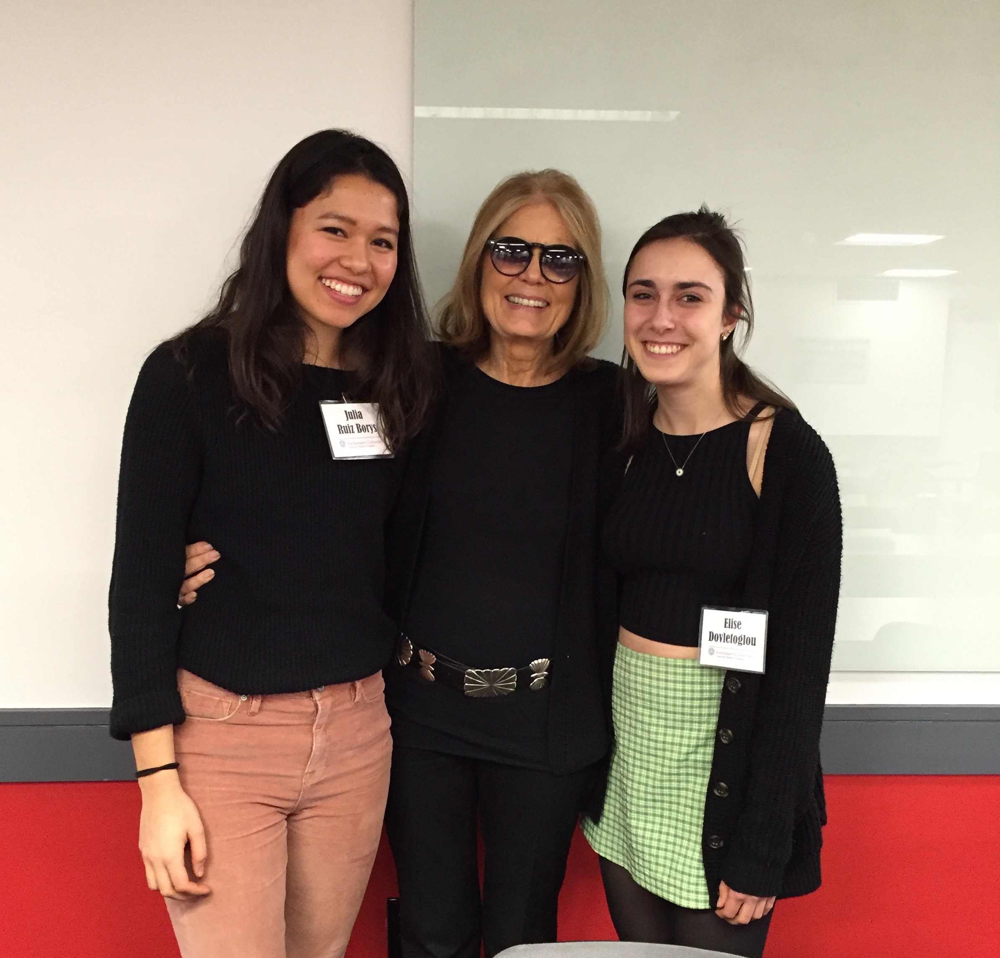
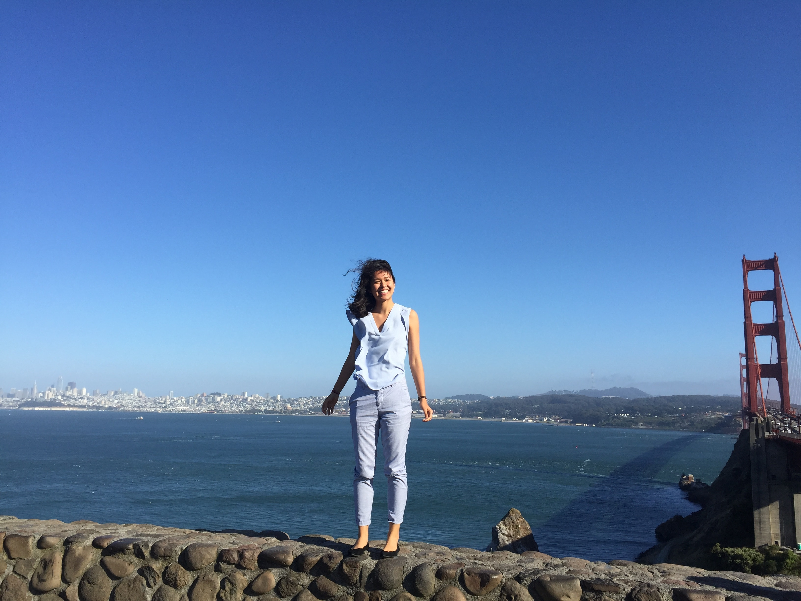

I was born in the town of Cholula in Puebla, MX, but my dad worked at an international company and was relocated to the United States. I grew up in McAllen, TX. It's a small suburbial city, with only one tiny museum, so I spent most of my time doing sports, reading, and drawing. I competed in gymnastics, tennis, swimming, volleyball, basketball, cross-country, and track and field. I wasn't the star of any of these sports, but I loved them. I loved being able to be a part of a team, be active, try and learn new things, and push to do my the best.
I did the IB program at Lamar Academy, which was ranked 9th in the nation, and 4th in the state, while doing sports, volunteering, etc. It was hard. But I found all of my classes interesting. I had a very strong desire to learn about the big world around me. I was the editor of the newspaper and yearbook for two years, vice president of student council, and a casual member of the chess club my last year. I had fun hanging out with friends and working on projects, I still do.
Northeastern University sits in the center of Boston, MA, far far away from McAllen, TX. Far different from the commuinty I knew. The opportunity for a completely new experience thrilled me. I wanted to taste East Coast life and now my perspectives and goals are even bigger.
I decided to pursue Marketing because understanding people and business fascinates me. Everyone is unique, but we all love certain things, people, animals, songs. How are we different, how are we the same? And Why does it matter?
I also study Interactive Media. One of my favorite memories is the night of my high school art show. I displayed 20 pieces I'd made in two years. I've always loved exploring my creativity and expressing myself through color,lines,and textures; and that night, I was able to show my friends and family a side that they did't all know about and I was able to see their reactions. While I still love stuido art, I'm now more interested in design and how to best display things for people to understand the content while also exciting them.
During Spring 2017 (January–June), I co-oped at Okta. It was a software company and I was in the Engineering Department, not on a team of engineers, but the Information Development team. I loved it. I had no notion of tech culture prior to my coop, but I liked it so much, I added computer science as a minor. Knowing that I can make things happen and change with software that I write, made me take on the challenge of getting into the coding game. I am a third year student in a lecture hall full of mostly freshmen who have been coding for years. I struggle to understand the right syntax for my assignments. But finding the solution, and learning while doing it, is so satisfying and so cool.
